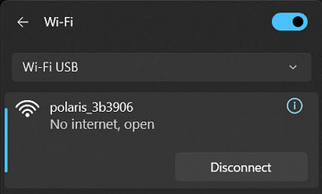
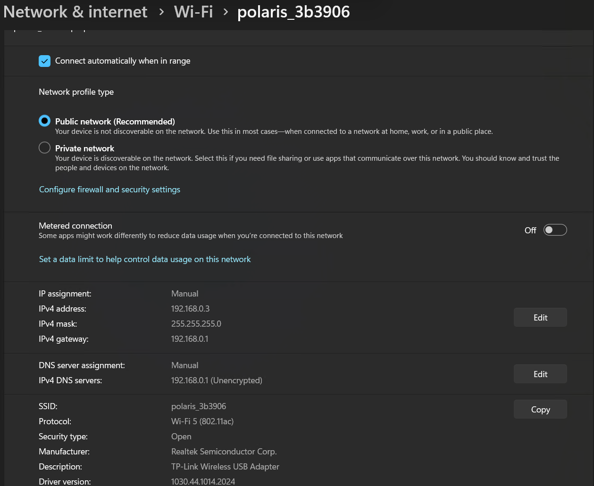
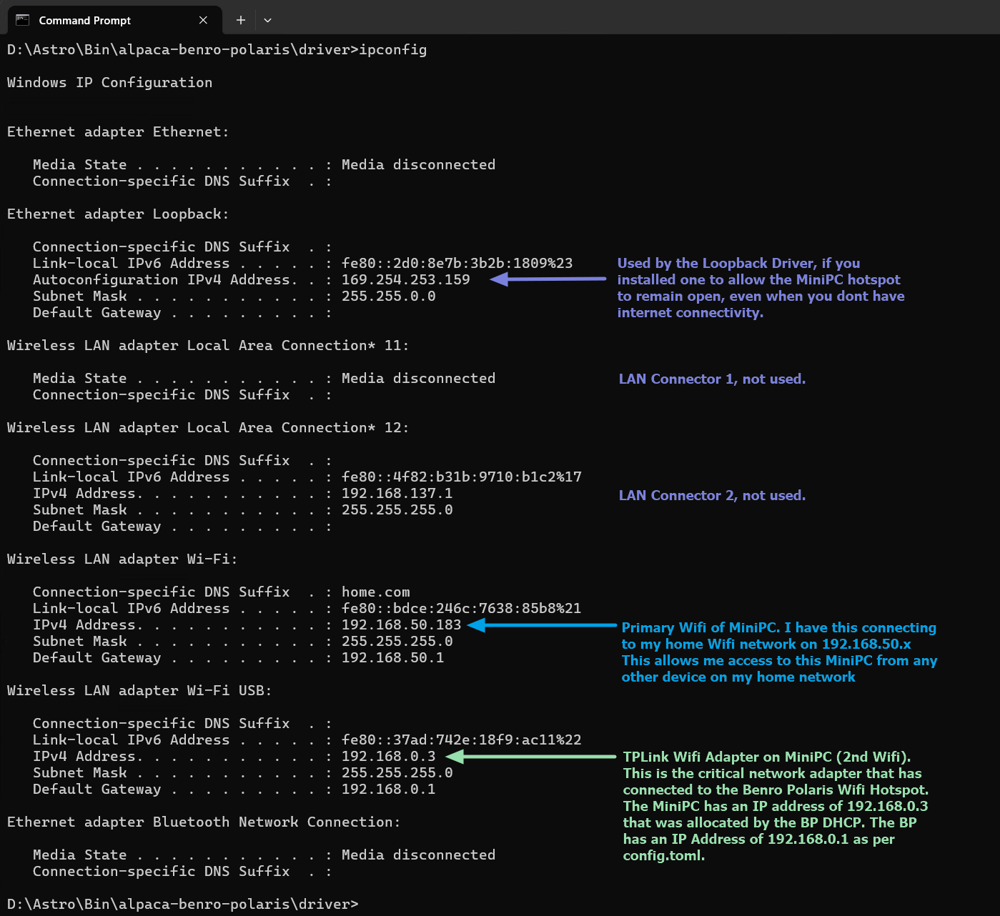
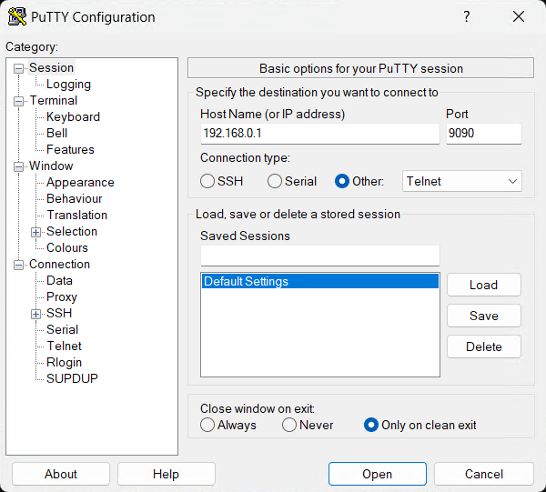
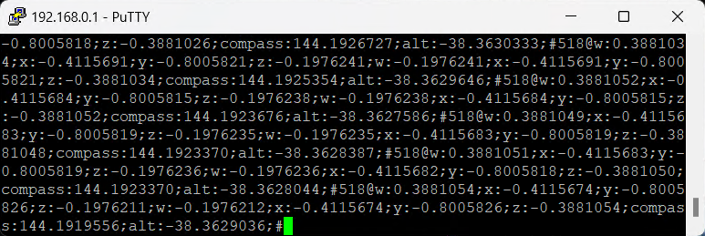

Troubleshooting¶
Alpaca Install | Benro Problems | Comms Problems | Nina Problems | Stellarium Problems
Alpaca Install Troubleshooting¶
A1 - setup.bat Cannot Install Git or uv¶
setup.bat installs Git with winget (built into Windows 11), and falls back to downloading the official Git installer, so it needs an internet connection. If it stops with Git could not be installed or uv could not be installed, install the missing tool yourself and run setup.bat again:
- Git: download and run the installer from https://git-scm.com/download/win
- uv: open PowerShell and run
powershell -ExecutionPolicy ByPass -c "irm https://astral.sh/uv/install.ps1 | iex", or see the uv installation guide
You do not need to install Python: uv downloads the correct version by itself, and the driver never uses any other Python on your PC.
A2 - uv Fails to Download the Python Packages¶
In some countries, your ISP's Domain Name Servers may redirect traffic to invalid Python Package servers. If setup.bat fails at step 3 (uv sync) with errors like the following.
hosts in the directory
C:\Windows\System32\drivers\etc. Add the following two lines to the end of the hosts file, then run setup.bat again.
A3 – How to resolve ModuleNotFoundError¶
The Alpaca Driver requires certain Python packages to be installed before it can run. If you encounter an error like the following when first launching the Driver:
Traceback (most recent call last):
File "D:\Astro\Bin\alpaca-benro-polaris\driver\main.py", line 38, in <module>
import discovery
File "D:\Astro\Bin\alpaca-benro-polaris\driver\discovery.py", line 8, in <module>
from config import Config
File "D:\Astro\Bin\alpaca-benro-polaris\driver\config.py", line 36, in <module>
import os, toml, json
ModuleNotFoundError: No module named 'toml'
This indicates that the required dependencies have not yet been installed.
To resolve this, run setup.bat again (see the Installation Guide). It installs all the Python packages the Driver needs, including toml. If you only want to reinstall the packages, run this from the project root:
A4 - Smart App Control Blocked a File that may be unsafe¶
This dialog is generated by Smart App Control (SAC), a built-in Windows 11 security feature introduced in the 22H2 update. SAC blocks untrusted or unsigned applications, especially those downloaded from the internet. For the Mini-PC, we recommend turning off Smart App Control.
To turn off Smart App Control
- Open Settings
- Go to Privacy & security
- Select Windows Security
- Click App & browser control
- Open Smart App Control settings
- Set it to Off
- Windows will ask Are you sure?. Confirm Yes I'm sure
A5 - Startup Exception - The Driver fails to bind the socket to 0.0.0.0 or ::¶
This may be caused by HTTP.sys, a kernel-mode HTTP listener built into Windows that prevents the Driver from binding to port 80. There are two approaches to resolving this conflict
To change the Port used by Alpaca Pilot:
-
You can change the port used by Alpaca Pilot by changing config.toml line
-
Choose a free port like 8081.
- When using a browser to navigate to Alpaca pilot you will need to pass the new port number. For Example: http://hostname:8081
To disable the http.sys driver if you dont need it:
- Disable the HTTP Service (Recommended). This prevents the kernel-mode driver from claiming port 80 upon startup.
- Open Registry Editor: Press Win + R, type regedit, and press Enter.
- Navigate to: HKEY_LOCAL_MACHINE\SYSTEM\CurrentControlSet\services\HTTP.
- Modify "Start": Locate the Start value, double-click it, and change the data to 4 (Disabled).
- Restart: Restart your computer to apply changes.
A6 - Windows 11 Shortcut Startup Issue¶
If you have created a Windows shortcut to start the Polaris Alpaca Driver and a message briefly appears but the driver does not launch, follow the steps below to view the full error message:
- Right-click the shortcut and select Properties.
- In the Target field, click inside the text box, then press Ctrl + A to select all text.
- Press Ctrl + C to copy the target string.
- Open PowerShell or Command Prompt.
- Press Ctrl + V to paste the copied target string, then press Enter to execute it.
- Review any error message displayed in the console.
- If necessary, correct the Target field in the shortcut based on the error details.
This process allows you to see the full error output, which may not remain visible when launching the shortcut normally.
A7 - Browser Won't Load Alpaca Pilot At All¶
If Alpaca Pilot suddenly won't load in your normal browser window — even though the Driver is confirmed running (e.g. ping to its address works, and a raw connection test to the port succeeds) — the browser itself is holding onto stale state for that address, not a problem with the Driver or your network. This is especially common after re-imaging the Pi, or after its IP address changes.
How to tell it's this issue: the page loads fine in an Incognito/Private window, but not in your normal one.
Fix, in your normal (non-Incognito) browser window:
- Clear that site's cached data:
- Chrome/Edge: Settings → Privacy and security → Site settings → search for the address (e.g.
192.168.50.161orap.local) → click it → Delete data. - Safari on iOS/iPadOS: Settings → Safari → Clear History and Website Data.
- Chrome/Edge: Settings → Privacy and security → Site settings → search for the address (e.g.
- Check Chrome/Edge's secure-connections setting: Settings → Privacy and security → Security → "Always use secure connections" (sometimes shown as "Warns you before connecting to sites that don't use a secure connection"). If this is on, the browser can silently try to upgrade a plain HTTP address to HTTPS and fail — since the Driver may not be running HTTPS, this makes the page look completely unreachable. Turn it off, or add an exception for the Driver's address.
- Always type the address with its scheme explicitly, e.g.
http://192.168.50.161:8080rather than just192.168.50.161:8080— some browsers default an unscoped address tohttps://. - Close and fully reopen the browser afterwards.
A8 - The Driver Does Not Start at Boot¶
setup.bat registers a Task Scheduler task named StartupAlpacaDriver. If the driver is not running after the PC starts:
-
Check the task's last result.
0means it ran without error. -
If the result mentions a user name or password (for example
0x8007052E), you have changed your Windows password since runningsetup.bat. Runsetup.batagain and enter the new password. - If the task is missing, you skipped it (
-s) or pressed Enter at the password prompt. Runsetup.batagain and enter your password. Blank passwords are not supported by Task Scheduler. -
Start the driver by hand to see any error message. From the
alpaca-benro-polarisfolder run: -
Read the end of
alpaca-benro-polaris\logs\alpaca.log. A line such asport 80 is already in usemeans another program, for example IIS or a web server, is using a port the driver needs. Stop that program, or choose different ports in Alpaca Pilot Network Settings. - To see Task Scheduler's own history, open Task Scheduler (
Win + R,taskschd.msc), selectStartupAlpacaDriver, and use Enable All Tasks History in the right-hand Actions panel.
A9 - setup.bat Cannot Download the Driver from GitHub¶
If setup.bat stops at step 2 with an error like:
fatal: unable to access 'https://github.com/ogecko/alpaca-benro-polaris.git/': Failed to connect to github.com:443 after 21070 ms: Could not connect to server
setup.bat tried twice. The cause is usually one of these:
- Security software is blocking Git. Antivirus suites with their own firewall (Norton, McAfee, ESET, Kaspersky, Bitdefender and others) often block a newly installed program without asking. In that software, allow
C:\Program Files\Git\mingw64\libexec\git-core\git-remote-https.exeandC:\Program Files\Git\cmd\git.exe, or temporarily turn its firewall off, then runsetup.batagain. - No internet, or a VPN is in the way. Check that https://github.com opens in a browser, disconnect any VPN, and run
setup.batagain. - A proxy that needs a login. Set it for Git yourself, then run
setup.batagain:
Benro Polaris Troubleshooting¶
B1 - Cannot start the Benro Polaris Device.¶
There is a known issue with the recommended Benro Polaris device startup procedure. "Power On. In the off state, double press and hold the [Power Button], and release it after hearing “beep beep beep” three times to turn on the device. ". Its worse than an old lawnmower at starting. If your device doesnt start, try the following:
- Remove Power cable - Dont have the Benro Polaris charging, while trying to start.
- Send to Park - use a Long Press to send the Benro Polaris to the parked position and ensure Power LED is off.
- Short Press - Every second or so (but no faster), until Power LED is illuminated.
- Long Press - As soon as its illuminated, do a long press, releasing after "beep, beep beep".
Another word of caution. Do not travel with the Astro USB cable or Camera USB Cable plugged into the Benro Polaris. There is a chance that movement within your bag may damage the cable. This can even lead to damage of the Benro Polaris and costly repairs.
B2 - Cannot connect BP App to the Benro Polaris Device¶
Sometimes the BP App cannot search and connect to the BP over Bluetooth or Wifi. The Searching for device might list your device in white but it never turns green or connects or shows a green check-mark.
- Fully exit close the BP App on your phone.
- Reset all Bluetooth and Wifi communications on your phone. Easiest way to do this is to toggle
Airplane/Flight Modeon and off. - Restart the BP App and it should find and connect to your BP.
B3 - Polaris has poor quality Sidereal Tracking¶
As an Alt/Az mount, the leveling of the Benro Polaris Tripod Head is a critical factor in the accuracy of your star tracking. To adjust the Polaris so it is as level as possible：
- Double-tap both virtual joysticks on the BP app to center the Polaris axes.
- Place a circular spirit level on top of the Astro Kit's quick-release plate and adjust the tripod to achieve a level of ±0.3 degrees or better.
- A HACCURY Luminous 1° Round level bubble can help you achieve accurate leveling.
- A Sunwayfoto DYH-68B Leveling Base and LEOFOTO QS-50K 50mm Quick Link Set can ease the leveling process AND as act as a standoff to provide extra clearance for the Benro Polaris knobs!
B4 - The Polaris cannot connect to my Home Wifi¶
The current firmware of the Benro Polaris does not allow connection to other WiFi networks. It can only host its own Wi-Fi hotspot.
This is no longer a limitation. The Alpaca Driver can serve as a proxy for the Polaris. It is capable of connecting to both the Polaris Wi-Fi Hotspot and your home Wi-Fi network. This allows you to manage the Polaris from any device connected to your home Wi-Fi, including an iPad, a phone, a desktop, or a laptop.
B5 - The Polaris is at 1% Battery and wont charge¶
The Polaris may have a design flaw that causes it to reject high-speed or smart chargers when the battery is in a low 1% state. It requires a slow, steady 5V source to restore sufficient power for the charging circuit to work correctly. Once it gets past that initial threshold, you can switch to a faster charger if needed. To fix the issue:
- Use a basic 5V 2.4A charger or an old battery pack via USB-A.
- Avoid smart or high-speed USB-C PD chargers initially.
- Let it charge without interruptions.
- Once it’s above 10–20%, you can switch to your usual power source.
B6 - How can you reset the Benro Polaris password?¶
To reset the password of your Benro Polaris
- Download the Password Resetting Package and place on to your SD card;
- Insert your SD card into Polaris, and power cycle the Polaris.
- When the Polaris powers up, it will read the SD card and reset your password.
- After resetting your password, please take the SD card out and delete the password resetting package from the SD card.
B7 - Where can I find the Benro Polaris manual?¶
The user manual can be found at the following link - Polaris User Manual English.
B8 - Single Star Alignment Will Not Complete¶
If the Single Star Alignment does not complete successfully, the Polaris may be stuck in an unknown connection state. You can identify this by using the Alpaca Pilot Connect Page. Click on the Skip button next to Single Star Alignment. If the status momentarily turns green, then turns back to red, it is likely you have this problem. The following recovery steps may help clear the connection:
- Power-cycle the Polaris
- Turn the Polaris off.
- Wait at least 2 minutes.
- Turn the Polaris back on and retry the Single Star Alignment.
- Force a fresh network connection
- Change your Wi-Fi connection to the Polaris from automatic addressing to Manual IPv4.
- Use the following settings:
- IP Address: 192.168.0.5
- Subnet Mask: 255.255.255.0
- Reconnect and retry the alignment process.
This forces the Polaris to establish a new clean connection, which may clear the stuck state.
Alpaca Communications Troubleshooting¶
C0 - Cannot connect Win11 Computer or Laptop to Benro Polaris Wifi¶
There appears to be an issue with some types of Wifi Adapters being able to conenct with the Benro Polaris Wifi. If you cannot get Win11 to form a connection with the polaris_XXXXX Wifi, you may want to try using a USB Wifi Adapter. The following adapter is known to connect with Benro Polaris, TP-Link AC600 USB WiFi Adapter.
You can use the Benro Polaris App to change the Band used by the Polaris to communicate. We recommend changing this to the 5Ghz band if you are using a MiniPC, and 2.4Ghz if you are using a Raspberry Pi Zero2.
- Open the Benro Polaris App
- Click on Nearby Devices and Connect to your Polaris
- Click on the Mode button in the top right hand corner of the screen
- Click on the Home icon in the top right hand corner.
- Close the Select the device to be connected window (if it is open)
- Click on the Cog icon inside the blue circle
- Click on the Wifi Range menu
- Choose 5G for MiniPC, or 2.4G for Raspberry Pi Zero2.
You can also change the TP-Link USB Wifi Adapter to only use the 5Ghz or 2.4GHz bands with the following procedure
- Open Windows Device Manager
- Under Network Adapters, double click on the TP-Link Wireless USB Adapter
- Change to the Advanced Tab
- Select the Wireless Mode Property
- Change the value to "IEEE 802.11 a/n/ac" for 5Ghz only, ie MiniPC.
- Change the value to "IEEE 802.11 b/g/n" for 2.4Ghz only, ie Raspberry Pi Zero2.
Forcing the TP-Link Adapter to only use the 5GHz or 2.4Ghz bands, can reduce a periodic network latency spike that is caused by WLAN AutoConfig Background Scanning. This is when Windows 11 momentarily diverts the adapter to scan for other frequencies, completely halting normal data communications and interfering with the Driver.
C1a - Cannot see "communications init... done" in the log (Wi-Fi 2 not connected).¶
- Use the Alpaca Driver log window to help diagnose your problem. The messages aim to help point you in the right direction. The driver will continue to retry connecting until you have resolved any issues.
- Confirm the mini-PC has connected with the polaris-XXXXX hotspot using the second
Wi-Fi 2orWi-Fi USBadapter. It should look like the following:
C1b - Cannot see "communications init... done" in the log (network conflict).¶
If you see the polaris_xxxxxx, No internet, open message on the Wi-Fi 2 adapter, you may have a network issue or conflict. Check each of these steps to see if it can resolve the issue.
- Click
Disconnect, wait 15s, then ChooseConnect Automaticallyand clickConnectto re-establish connection. Wait 30s for the Driver to attempt reconnection. - Check that your home network does not conflict with the Polaris IP address of
192.168.0.1. Some home network routers may default to also using the IP address of192.168.0.1. We recommend that you change your home network to an address range of say192.168.50.xxx, so that it doesnt conflict with various IP devices that commonly use the address192.168.0.1.
C1c - Cannot see "communications init... done" in the log (IPv6 rather than IPv4).¶
When Windows connects to the Benro Polaris network, sometimes it only sets up an IPv6 network. You can manually set the network settings to help speed up connection and force an IPv4 network. To manually set the network properties.
- From the polaris-XXXXX hotspot dialog, click the i circle for more information
- Under IP Assignment, Automatic (DHCP), Click Edit
- Click the Edit network IP setttings dropdown and choose Manual
- Select IPv4 On and IPv6 off
- Enter an IP address of
192.168.0.3 - Enter a Subnet mask of
255.255.255.0 - Enter a Gateway of
192.168.0.1 - Enter a Preferred DNS of
192.168.0.1 - Choose DNS over HTTPS to be OFF
- Click the Save button

C2 - Cannot see any log message except two INFO ==STARTUP== lines¶
- Check your device doesnt have any IT policy to not allow connecting to an open WIFI like the Polaris Hotspot.
- Check which Wifi adapter is being used. There is a known issue with the Mele Quieter 4C not being able to connect to the Polaris Wifi. Do not use the MediaTek RZ616 Wi-Fi 6E 160MHz (Driver version 3.3.0.595) built in Wifi Adapter. Use the TP-Link AC600 USB WiFi Adapter instead.
- Check your IP Configuration using a Command Prompt to run
ipconfig.exe. Ensure your Mini-PC has a valid IP Address from the Benro Polaris DHCP server. It should look like the following:

Here is a revised and expanded version with clearer structure, tighter language, and additional real-world causes we’ve seen in the field.
You can paste this directly into your documentation.
C3 – Connection from Mini-PC to Polaris Wi-Fi Drops Out¶
When Alpaca Pilot displays:
“The Alpaca Driver is not receiving position updates from Polaris”
this means the Driver has not received the expected 200 ms position update from Polaris for more than 2 seconds. An occasional appearance of this message may be normal (e.g., brief RF interference). However, repeated or persistent occurrences indicate a network or system issue.
Another common symptom of a dropped connection is the Alpaca Driver log message:
This indicates that Windows reset or tore down the TCP connection. This is typically due to a network adapter reset, IP address change, or power management event.
Below are common causes and troubleshooting guidance.
C3-1. Driver CPU Blocking or System Resource Starvation¶
If the Mini-PC CPU is heavily loaded, the Alpaca Driver may not process incoming messages in time.
Check:¶
- Open Task Manager → Performance
- Confirm CPU usage is stable and not near 100%
- Watch for spikes during imaging operations
Common causes:¶
- ASCOM drivers blocking the message loop
- Antivirus scanning during capture
- Windows Update running in background
- Slow storage (SD cards / eMMC systems under load)
Recommendations:¶
- Where possible, connect to cameras natively rather than through ASCOM
- Disable unnecessary startup programs
- Exclude Alpaca directory from antivirus real-time scanning
- Ensure at least 40% CPU headroom during imaging
C3-2. DHCP Lease Rejection (DHCPNACK)¶
If Windows logs events such as:
“The IP address lease 192.168.0.2 … has been denied by the DHCP server 192.168.0.1 (DHCPNACK)”
then the Polaris DHCP server has rejected the IP renewal request. When this happens, Windows drops the IP address, the adapter resets, all active TCP connections terminate and the Driver logs [WinError 1236]
Common causes:¶
- Two DHCP servers active (router + Polaris)
- IP address conflict
- Lease time set very short
- Another Device previously connected with same IP
Check:¶
Check Windows Event Viewer:
Recommended Fix:¶
The most reliable solution is to eliminate DHCP from this link:
- Set Mini-PC to a unique static IP (e.g., 192.168.0.20)
This removes lease renewal as a failure point.
C3-3. Windows Power Management Resetting the Adapter¶
Windows aggressively powers down USB Wi-Fi adapters, especially “nano” style adapters. This can silently reset the adapter and terminate connections.
Disable Power Saving:¶
-
Using Device Manager
-
Network Adapters → TP-Link adapter → Properties
-
Power Management tab:
- Uncheck: “Allow the computer to turn off this device to save power”
-
Using Advanced Power Settings
-
Control Panel → Power Options
- Wireless Adapter Settings → Power Saving Mode → Maximum Performance
- USB Settings → USB Selective Suspend → Disabled
C3-4. USB Wi-Fi Adapter Hardware Limitations¶
Small “nano” adapters are prone to:
- Thermal throttling
- Weak RF performance
- Driver instability on Windows 11
- High packet loss under sustained traffic
We recommend using a full-size USB adapter with an external antenna as listed in the documentation.
If problems persist:
- Try a powered USB hub
- Try a different USB port (avoid front panel ports)
- Install the latest manufacturer driver (not Windows default)
C3-5. RF Signal Strength or Interference¶
Polaris operates on 2.4 GHz (if applicable), which is highly congested.
Symptoms:¶
- Intermittent dropouts
- Worse performance near homes or star parties
- Better performance at close range
Causes:¶
- Nearby Wi-Fi networks
- Bluetooth devices
- USB 3.0 cables radiating interference
- Metal obstructions or tripods blocking antenna
Mitigation:¶
- Maintain clear line of sight
- Keep Mini-PC within 2–3 m of Polaris
- Move USB 3 cables away from Wi-Fi adapter
C3-6. Network Adapter Driver Instability (Windows 11)¶
Some Realtek-based adapters are unstable under Windows 11. Symptoms can include: No DHCP errors; Sudden disconnect/reconnect events; “Network adapter reset” events in Event Viewer.
Check:¶
Event Viewer → Windows Logs → System Filter for:
- Netwtw
- Realtek
- WLAN-AutoConfig
Fix:¶
- Install latest driver from manufacturer website
- Roll back driver if problem began after update
C3-7. Roaming or Auto-Switching Networks¶
This can come from either side of the connection:
- The Mini-PC itself, if it has multiple saved Wi-Fi networks, Ethernet connected simultaneously, or Internet Connection Sharing enabled — Windows may switch interfaces automatically.
- Your home mesh Wi-Fi system (multiple access points sharing one network name), if it has a feature often called "Roaming Assistant," "Smart Connect," or "Band Steering." This disconnects a device it judges to have a weak signal, hoping it reconnects to a closer access point — some Wi-Fi adapters don't handle this well and get bumped repeatedly, even when their signal is actually strong.
Symptoms (mesh bumping specifically):¶
- The connection drops and reconnects every 30–90 seconds, indefinitely
- It happens even close to the router, with no obvious signal problem
- Your router/mesh app's own system log shows repeated "disconnect weak signal" entries for the device, even though the signal at each reconnect looks fine
Fix:¶
- Disable unused network adapters
- Set Polaris network to “Private”
- Forget other Wi-Fi networks during testing
- If your router/mesh shows signs of the bumping behaviour above: in your router/mesh app's Wi-Fi settings, find "Roaming Assistant" / "Smart Connect" / "Band Steering" and disable it (or raise its signal threshold well past the device's actual signal, if disabling isn't an option). This is a router-side setting — no change is needed on the device itself.
C4 - Still cannot get communications with Polaris Wifi¶
To further help diagnose communication problems between the Alpaca Driver and the Polaris, you can use Telnet or PuTTY to directly connect to the Polaris. This will isolate whether the problem is related to the Alpaca Driver or not.
On Win11:
- Use the following link to Download PuTTY (a telnet client) to your device running the Driver.
- Select the 64-bit x86 version for the Windows installer.
- Double click on the file you downloaded to install PuTTY.
- Perf the normal BP App setup (a) Search for Device (b) Connect to polaris_xxxxxx © Select Atro Mode (d) Align Compass (e) Align Star (f) Confirm.
- Connect the device running the Alpaca Driver to the Polaris Wifi Hotspot.
- Run the PuTTY app.

- Enter
192.168.0.1into the HostName (or IP address) field. - Enter
9090into the Port field. - Select Connection Type
Otherand drop downTelnet. - Click
Open - Select
Yeswhen asked by User Account Control, Do you want to allow this app to make changes to your device? This opens the firewall to allow PuTTY to communicate with BP.
The PuTTY application should show a window with the raw communications from the Benro Polaris. If your connection is working it should look like the following, constantly scrolling.

C5 - No Telnet/PuTTY communications with Polaris Wifi¶
If you cannot see the raw communications scrolling in PuTTY from Troubleshooting Step C4, then there is a problem communicating with your device that is independent of the Alpaca Driver.
- Check the Signal Strength of the Polaris WiFi hotspot at your Alpaca Driver device. You may need to move the device running the Alpaca Driver closer to the Benro Polaris.
- Check you are not running AntiVirus Software that may block open Wifi Connections
- Check you do not have an IT or Windows policy blocking open Wifi Connections.
- Check you do not have a Virtual Private Network (VPN) enabled.
-
Check for IP connectivity to the Polaris by using a Command Window to ping the Benro Polaris.
C:\Users\Astro> ping 192.168.0.1 Reply from 192.168.0.1: bytes=32 time=1ms TTL=64 Reply from 192.168.0.1: bytes=32 time=2ms TTL=64 Reply from 192.168.0.1: bytes=32 time=2ms TTL=64 Reply from 192.168.0.1: bytes=32 time=2ms TTL=64 Ping statistics for 192.168.0.1: Packets: Sent = 4, Received = 4, Lost = 0 (0% loss), Approximate round trip times in milli-seconds: Minimum = 1ms, Maximum = 2ms, Average = 1ms C:\Users\Astro> -
If the ping does not respond within a few milliseconds, go back through C1-C3 to double check the setup.
C6 - Powershell commands to check the Network setup¶
You can use the following commands from a PowerShell window, to check the status of your TP-Link adapter and Wifi connection to the Polaris.
- To open PowerShell, from the Run menu type
PowerShelland click theWindows PowerShellApp -
To list all interfaces, including MAC Address and current status
PS C:\> Get-NetAdapter Name InterfaceDescription ifIndex Status MacAddress LinkSpeed ---- -------------------- ------- ------ ---------- --------- Wi-Fi Intel(R) Wi-Fi 6 AX201 160MHz 22 Up 80-38-FB-4C-AB-85 1.9 Gbps Loopback Microsoft KM-TEST Loopback Adapter 21 Up 02-00-4C-4F-4F-50 1.2 Gbps Local Area Connection* 15 Microsoft Wi-Fi Direct Virtual Ada...#7 16 Up A8-29-48-B0-19-0B 0 bps Bluetooth Network Conn... Bluetooth Device (Personal Area Netw... 15 Disconnected 80-38-FB-4C-AB-89 3 Mbps Ethernet Realtek PCIe GbE Family Controller 14 Disconnected 00-CE-39-D1-58-BF 0 bps Wi-Fi 2 TP-Link Wireless USB Adapter 10 Up A8-29-48-B0-19-0B 72.2 Mbps -
To show driver details.
PS C:\> netsh wlan show drivers Interface name: Wi-Fi 2 Driver : TP-Link Wireless USB Adapter Vendor : Realtek Semiconductor Corp. Provider : Microsoft Date : 11/07/2011 Version : 1030.38.712.2019 INF file : netrtwlanu.inf Type : Native Wi-Fi Driver Radio types supported : 802.11n 802.11g 802.11b 802.11ac 802.11n 802.11a FIPS 140 mode supported : Yes 802.11w Management Frame Protection supported : Yes Hosted network supported : No Authentication and cipher supported in infrastructure mode: Number of supported bands : 2 2.4 GHz [ 0 MHz - 0 MHz] 5 GHz [ 0 MHz - 0 MHz] Interface name: Wi-Fi Driver : Intel(R) Wi-Fi 6 AX201 160MHz Vendor : Intel Corporation Provider : Intel Date : 1/05/2024 Version : 23.60.1.2 INF file : oem12.inf Type : Native Wi-Fi Driver Radio types supported : 802.11b 802.11g 802.11n 802.11a 802.11ac 802.11ax FIPS 140 mode supported : Yes 802.11w Management Frame Protection supported : Yes Hosted network supported : No Authentication and cipher supported in infrastructure mode: Number of supported bands : 2 2.4 GHz [ 0 MHz - 0 MHz] 5 GHz [ 0 MHz - 0 MHz] IHV service present : Yes IHV adapter OUI : [00 00 00], type: [00] IHV extensibility DLL path: C:\WINDOWS\system32\IntelIHVRouter10.dll IHV UI extensibility ClSID: {00000000-0000-0000-0000-000000000000} IHV diagnostics CLSID : {00000000-0000-0000-0000-000000000000} Wireless Display Supported: Yes (Graphics Driver: Yes, Wi-Fi Driver: Yes) -
To show Wi-Fi connection details (SSID, signal strength, bitrate, BSSID)
PS C:\> netsh wlan show interfaces There are 2 interfaces on the system: Name : Wi-Fi 2 Description : TP-Link Wireless USB Adapter GUID : 41e960f6-3ef5-49fa-9372-0d229f7e8284 Physical address : a8:29:48:b0:19:0b Interface type : Primary State : connected SSID : polaris_b83c06 AP BSSID : 94:bb:43:c9:e1:f1 Band : 2.4 GHz Channel : 9 Network type : Infrastructure Radio type : 802.11n Authentication : Open Cipher : None Connection mode : Auto Connect Receive rate (Mbps) : 72.2 Transmit rate (Mbps) : 72.2 Signal : 100% Rssi : -29 Profile : polaris_b83c06 QoS MSCS Configured : 0 QoS Map Configured : 0 QoS Map Allowed by Policy : 0 Name : Wi-Fi Description : Intel(R) Wi-Fi 6 AX201 160MHz GUID : b67dddca-5819-4bb0-b2cf-9544bce8334f Physical address : 80:38:fb:4c:ab:85 Interface type : Primary State : connected SSID : atlas_6G AP BSSID : a0:36:bc:40:77:8c Band : 5 GHz Channel : 36 Connected Akm-cipher : [ akm = 00-0f-ac:02, cipher = 00-0f-ac:04 ] Network type : Infrastructure Radio type : 802.11ax Authentication : WPA2-Personal Cipher : CCMP Connection mode : Auto Connect Receive rate (Mbps) : 2402 Transmit rate (Mbps) : 1633 Signal : 87% Rssi : -51 Profile : atlas_6G QoS MSCS Configured : 0 QoS Map Configured : 0 QoS Map Allowed by Policy : 0 -
To show more detailed info on network interfaces, IP addresses (IPv4/IPv6), MAC address, and status.
PS C:\> Get-NetIPConfiguration InterfaceAlias : Loopback InterfaceIndex : 21 InterfaceDescription : Microsoft KM-TEST Loopback Adapter NetProfile.Name : Unidentified network IPv4Address : 169.254.176.36 IPv6DefaultGateway : IPv4DefaultGateway : DNSServer : fec0:0:0:ffff::1 fec0:0:0:ffff::2 fec0:0:0:ffff::3 InterfaceAlias : Local Area Connection* 15 InterfaceIndex : 16 InterfaceDescription : Microsoft Wi-Fi Direct Virtual Adapter #7 NetProfile.Name : Identifying... IPv4Address : 192.168.137.1 IPv6DefaultGateway : IPv4DefaultGateway : DNSServer : fec0:0:0:ffff::1 fec0:0:0:ffff::2 fec0:0:0:ffff::3 InterfaceAlias : Wi-Fi InterfaceIndex : 22 InterfaceDescription : Intel(R) Wi-Fi 6 AX201 160MHz NetProfile.Name : atlas_6G IPv4Address : 192.168.50.54 IPv6DefaultGateway : IPv4DefaultGateway : 192.168.50.1 DNSServer : 8.8.8.8 InterfaceAlias : Wi-Fi 2 InterfaceIndex : 10 InterfaceDescription : TP-Link Wireless USB Adapter NetAdapter.Status : Disconnected InterfaceAlias : Ethernet InterfaceIndex : 14 InterfaceDescription : Realtek PCIe GbE Family Controller NetAdapter.Status : Disconnected InterfaceAlias : Bluetooth Network Connection InterfaceIndex : 15 InterfaceDescription : Bluetooth Device (Personal Area Network) NetAdapter.Status : Disconnected -
To show routing table (default gateway + network routes).
PS C:\> Get-NetRoute ifIndex DestinationPrefix NextHop RouteMetric ifMetric PolicyStore ------- ----------------- ------- ----------- -------- ----------- 16 255.255.255.255/32 0.0.0.0 256 25 ActiveStore 16 224.0.0.0/4 0.0.0.0 256 25 ActiveStore 22 192.168.50.255/32 0.0.0.0 256 30 ActiveStore 22 192.168.50.54/32 0.0.0.0 256 30 ActiveStore 22 192.168.50.0/24 0.0.0.0 256 30 ActiveStore 10 192.168.0.255/32 0.0.0.0 256 55 ActiveStore 10 192.168.0.2/32 0.0.0.0 256 55 ActiveStore 10 192.168.0.0/24 0.0.0.0 256 55 ActiveStore 21 169.254.255.255/32 0.0.0.0 256 25 ActiveStore 21 169.254.176.36/32 0.0.0.0 256 25 ActiveStore 21 169.254.0.0/16 0.0.0.0 256 25 ActiveStore 1 127.255.255.255/32 0.0.0.0 256 75 ActiveStore 1 127.0.0.1/32 0.0.0.0 256 75 ActiveStore 1 127.0.0.0/8 0.0.0.0 256 75 ActiveStore 10 0.0.0.0/0 192.168.0.1 0 55 ActiveStore 22 0.0.0.0/0 192.168.50.1 0 30 ActiveStore -
To generate a comprehensive wifi report file in HTML.
> NOTE: This command requires Administrator privellages -
To check which address family the TP-Link adapter actually obtained. If there is no
IPv4row at all (onlyIPv6), the adapter has come up IPv6-only against the Polaris (see C1c) and needs to be reconnected/reconfigured for IPv4. -
To check the DHCP lease detail for the TP-Link adapter. Confirm
DHCP Enabled: Yes,DHCP Server: 192.168.0.1, and that theIPv4 Addressis192.168.0.xand not a169.254.x.xAPIPA address (which means DHCP failed and Windows self-assigned an address). -
To force a DHCP release/renew on the TP-Link adapter and watch it fail live, which is useful if the connection is currently stuck. An error such as "unable to contact your DHCP server" confirms the Polaris's own DHCP server is refusing the request (see C3-2).
-
To pull the DHCP client's own event log entries and look for a
DHCPNACK(lease rejected by the Polaris, see C3-2). Cross-reference theTimeCreatedtimestamps against the Driver log's[WinError 1236]entries to confirm they line up. -
To check whether Windows power management is allowed to turn off the TP-Link adapter (see C3-3). If
AllowComputerToTurnOffDeviceis notDisabled, this can silently drop the connection independently of any DHCP issue.
Nina Troubleshooting¶
N1 - Cannot Remote Desktop to MiniPC running Nina¶
- There are a range of remote desktop applications avalable which you might want to try:
- Microsoft Remote Desktop - Free with Windows 11 Pro. Some testers have had issues connecting via MS Remote desktop. I've been using it quite successfully.
- AnyDesk - "Best remote desktop solution for occasional users" - Techradar. Successfully used by a beta tester.
- Splashtop - "Powerful remote desktop with impressive features" - Techradar. I've used this on my home network successfully.
- TeamViewer - "Best remote PC software for cross-platform compatibility" - Techradar.
- RemotePC - Short free trial.
- LogMeIn - Lacks a free trial.
- Zoho Assist - Free tier very limited.
- When using AnyDesk and certain other programs, you might need to use an HDMI Dummy Plug to get video output from the mini PC if a monitor is not connected. Microsoft Remote Desktop Client does not require this, but it may not be available for some mobile devices.
N2 - I still cannot remotely connect to the MiniPC running Nina¶
- Windows Updates can be delivered every month that may effect the state of the device.
- Check Mini-PC state. Reconnect a monitor and Keyboard to the Mini-PC and check that it is up and running.
N3 - I have a Mini-PC running without internet access. I cannot remotely connect to it.¶
- This type of configuration is more challenging and can be confusing, but it is possible.
- There are two Wifi Hotspots in this configuration, the BP Hotspot and the Mini-PC Hotspot.
- Check that your laptop has not dropped connection to the Mini-PCs hotspot.
- Check IP connectivity. From a command prompt, use
ping <hostname>to ensure you have IP connectivity and DNS lookup to your Mini-PC. - You may find using the Mini-PC's
IP4-addressin Remote Desktop rather than<hostname>may make it easier to connect. - Check that the MiniPC Hotspot is not using the TPLink. You can unplug the TPlink to force the MiniPC hotspot to use the embedded Wifi of the Mele.
- Once you have connected to the Mini-PC via Remote Desktop, then re-plug in the TPLink, to allow the Alpaca Driver to use it to connect with the BP Hotspot.
N4 - Which Mount should I select in Nina's Equipment Tab, it lists 8 Benro Polaris Mounts?¶
- The Alpaca Driver defaults to broadcasting
ASCOM Alpacaservices on all network interfaces on the MiniPC. - If you have the ASCOM Platform installed, Nina will also detect all the
ASCOM directinterfaces to the Alpaca Driver. - We recommend connecting to the Alpaca Driver via
ASCOM Alpacaservices rather thanASCOM. Choose one of the Mounts underASCOM Alpaca. - You can limit what IP Address the driver exposes the
ASCOM AlpacaService on, by setting the fieldalpaca_restapi_ip_addressindriver/config.toml. - To limit the Alpaca Service only to applications that are running on the Mini-PC (ie no remote applications), set it the following.
N5 - Cannot obtain a good autofocus run with Nina?¶
- Check your Lens Stabilisation is off. This interfers with sidereal tracking.
- Check you Lens AutoFocus is off on the Lens and Camera Body. If left on this may cause the camera focusing system to hunt interering with the image capture process.
- Check for Lens Cap not removed. Not kidding.
- Check for clouds.
- Check for haze or smoke.
- Check for occulusion by trees or buildings.
- Check for that you are close to focus before starting a Nina Focus run.
N6 - Cannot plate solve with Nina and ASTAP?¶
- Check you are in Focus
- Check to make sure you Camera Pixel Size and Telescope Focal Length is set correctly in Nina's Options > Equipment tab, including any reducer or extender. Plate solving wants an approximately correct field of view as input and frequently fails if not set to the right values.
- The focal_length and focal_ratio in config.toml are provided because of the ASCOM standard, but are not used by Nina. You do not need to update these when you change lenses.
- When using plate-solving to do the first polar alignment of the Polaris, you need to set the exposure length short so that you dont get star trails. If it is too short you will not get enough stars for the plate solve to work. To overcome this trade off, do a compas alignment so that the Polaris is at least roughly polar aligned.
- Check if you are using any filters. Using a narrow band filter on the camera, like the L-Ultimate Optolong HaOIII filter, can make plate solving more challenging for ASTAP.
- Check you have downloaded the relevant STAR databases. For 200mm lens and less you may need to download the Wide field STAR database G05
N7 - Cannot Connect Sony Camera with Nina¶
Some later models of Sony cameras (e.g., Sony Alpha 7R IV) are not recognized by the Sony Plug-in that is included with Nina. To resolve this:
- You can download more up to date ASCOM Sony drivers from the ASCOMSonyCameraDriver GitHub repository.
Alternatively, you can use the following procedure to try and get the Nina Driver to recognise your camera:
- Attach your camera via USB. Configure as you would to connect to the Polaris.
- Turn on your camera.
- Enter Device Manager in the Windows desktop search bar.
- Click on the Device Manager icon to open the Device Manager.
- Check for the linr
libusbK Usb Devices. - If the line does not exist, close the Device Manager. You are correctly configured.
- If the line
libusbK Usb Devicesexists:- Left-click on the entry to expand the entry. You should now see Sony Remote Control Devices.
- Right-click on
Sony Remote Control Devicesand selectUpdate Driver. - Select
Browse my computer for drivers. - Select
Let me pick from a list of available drivers on my computer. - Left-click on
MTP USB Device. - Your driver should now update. NOTE: Your camera is now listed under
Portable device. Other software may not function correctly with the Device Manager configured this way. - You can change back to the original setting by following these steps and selecting
libusbK Usb Devicesas the new driver instead ofMTP USB Device.
Hopefully, Nina will now connect to your camera.
N8 - Cannot Connect Nikon D850 Camera with Nina¶
There is a known issue with connecting a D850 via USB2 with Nina. Try connecting the Nikon D850 via a USB3 or USB-C port. See this Redit Post on the D850 and Nina for more details.
N9 - Cannot retrieve Remote Stellarium Coordinates to Nina¶
The Nina Sky Atlas has a feature to allow you to get target coordinates from your configured Planetarium Software. You can set the Options / Planetarium software as Stellarium with a given Host IP Address and Port.
You need to configure Stellarium, adding the Remote Control Plug-in, enabling it to run at startup. Restarting Stellarium allows you to configure the plug-in to automatically enable the server on startup.
The Remote Control Plug-in defaults to port 8090. This port can conflict with other software you may have on your computer eg Wonderware RecoverIt. If you cannot get Nina to retreive the coordinates from Stellarium try setting the port number to 8091 in both Stellarium and Nina. This may fix the integration between Nina and Stellarium.
Stellarium Troubleshooting¶
S1 - StellariumPLUS Cannot Connect to the Alpaca Driver¶
There are three approaches to connect StellariumPLUS to the Alpaca Driver, depending on your setup scenario.
- Scenario A: The Alpaca Driver device connects to Polaris Hotspot only.
- Connect your phone to the Polaris Hotspot.
- In Stellarium's Observing Tools Setup, enter a Network Host of
192.168.0.3 - You may need to disable Mobile Data on your phone to get this to work.
- Scenario B: The Alpaca Driver device connects to Polaris Hotspot and your Home Wifi.
- Check that the BP App is closed. This frees the phones Wifi from the Polaris Wifi.
- Check that your phone does not autoconnect to the Polaris Wifi.
- Connect your phone to your Home Wifi.
- In Stellarium's Observing Tools Setup, enter a Network Host of
192.168.X.XXX - This address needs to match the IP address of your Alpaca Driver machine on your Home Wifi.
- Scenario C: The Alpaca Driver device connects to Polaris Hotspot and has its own NinaAir Hotspot.
- Check that the BP App is closed. This frees the phones Wifi from the Polaris Wifi.
- Check that your phone does not autoconnect to the Polaris Wifi.
- Connect your phone to the NinaAir Hotspot.
- In Stellarium's Observing Tools Setup, enter a Network Host of
192.168.X.XXX - This address needs to match the IP address of your Alpaca Driver machine on your NinaAir Wifi.
S2 - Still Cannot Connect StellariumPLUS to the Alpaca Driver¶
- Check IP connectivity. You must run StellariumPLUS on a mobile device that can communicate with the Alpaca Driver. Use a free mobile Ping app to check that you can ping the Alpaca Driver device. If you cannot ping, then check that you are not using the phone's mobile data, that you are within range of your router's Wi-Fi signal, and that your phone is connected to your home Wi-Fi.
- Check the StellariumPLUS Host field on the Observing Tools settings popup. This needs to be set to the Alpaca Driver's IP address. Do not use 127.0.0.1 Loopback.
- Check stellarium_telescope_ip_address in config.toml. This can be left as its default '' to make the Driver serve the SynScan protocol on any network adapter it can find. If you want to limit the IP address servered by the Driver, you can set this to the IP address of the Mini-PC on your home network.
S3 - Stellarium Desktop has greyed out ASCOM option¶
- Stellarium Desktop v24.3 for Windows has two installable versions depending on a third party library it uses, called Qt.
- The Stellarium Desktop v24.3 Qt6 version no longer has ASCOM drivers enabled.
- We recommend you install Stellarium Desktop v24.3 Windows x86_64 Qt5 Windows 7+ version.
- If you installed the incorrect version, simply uninstall it and reinstall the version mentioned above.
S4 - Stellarium Desktop freezes with Remote Desktop¶
- Check fps settings. Stellarium's default is a crazy 10000 fps. We suggest reducing the default settings in the following file
C:\Users\Nina\AppData\Roaming\Stellarium\config.ini, where Nina is replaced with your User name.